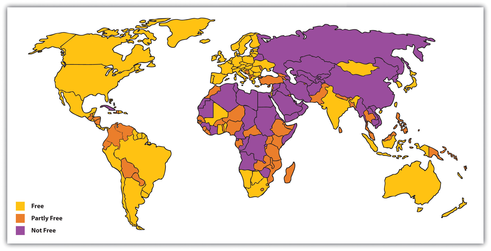
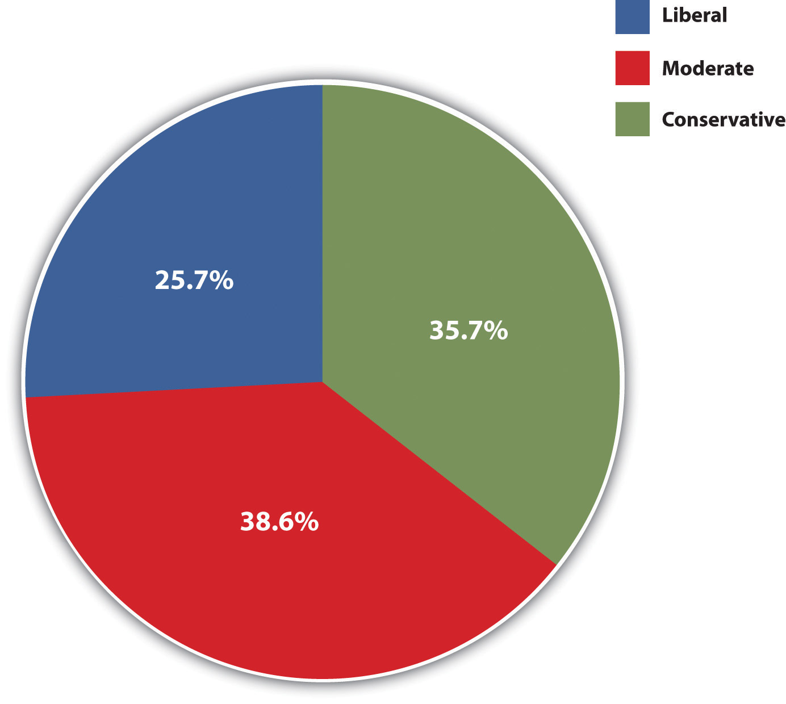
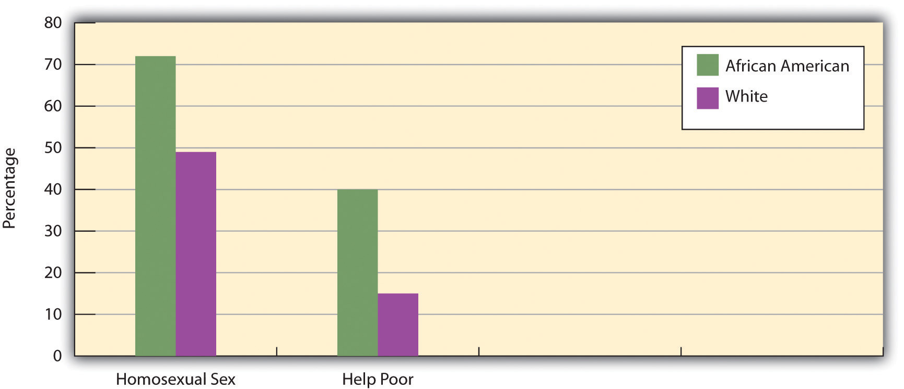
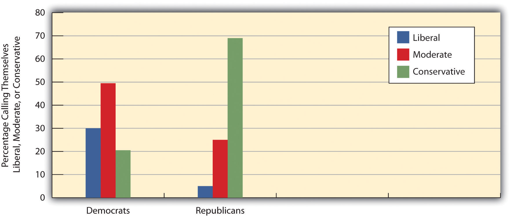
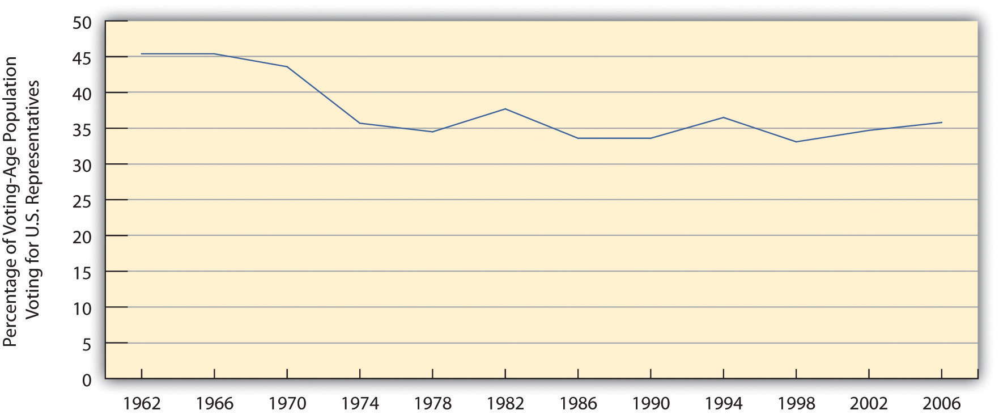
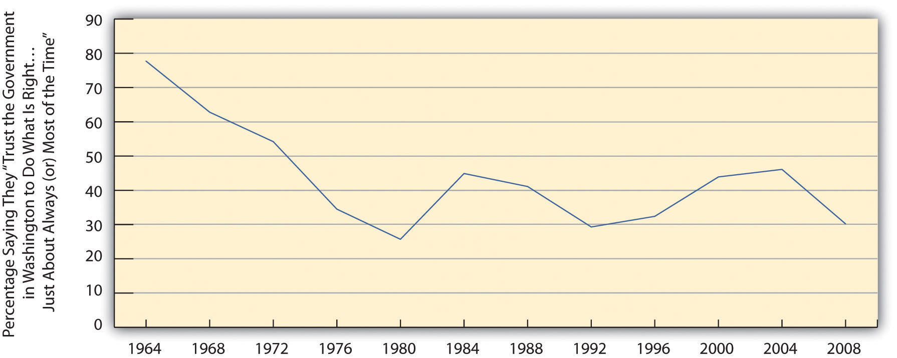
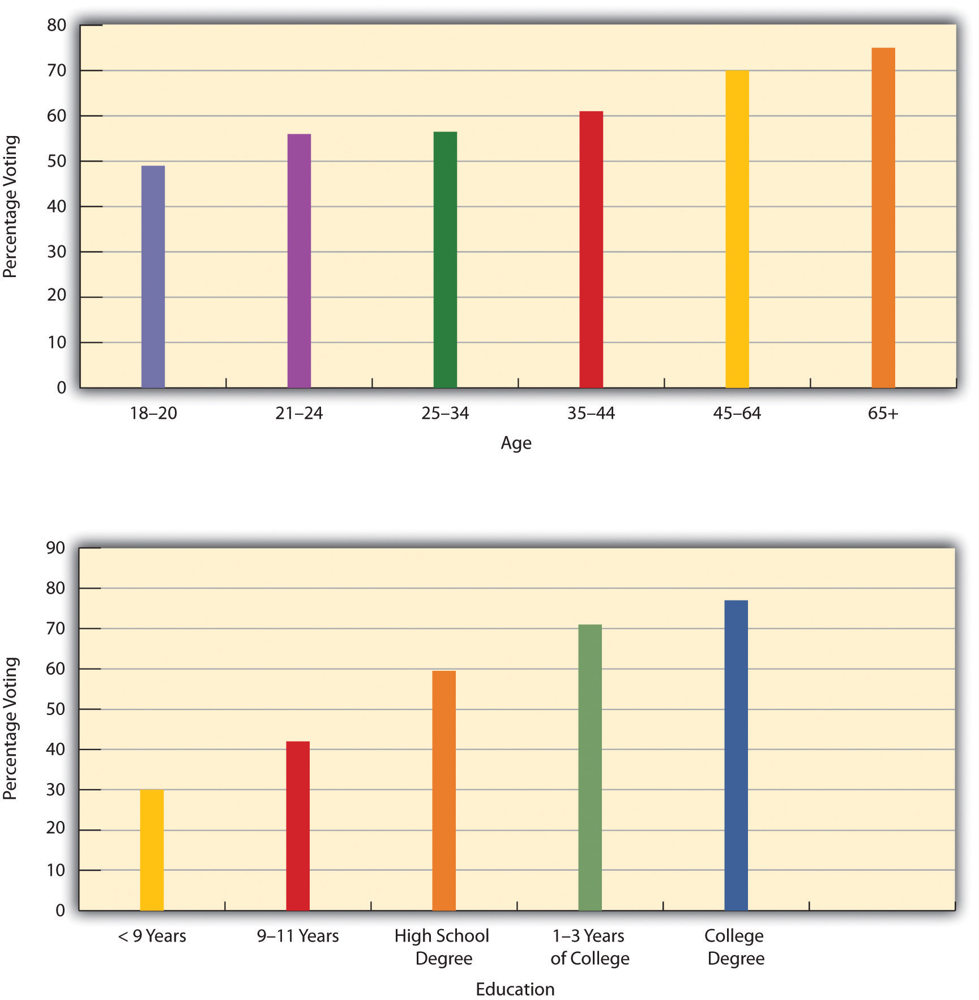

“Student Leaders Vote to Oppose 21-Only,” the headline said. In September 2010, the student government at the University of Iowa voted 16–9 to endorse the repeal of a bar ordinance in Iowa City. Adopted by the City Council the previous spring, the ordinance bans people younger than 21 from the city’s bars after 10:00 p.m.; before the ordinance was adopted, 19- and 20-year-olds were allowed in the bars. Although the ordinance was meant to reduce underage drinking, student leaders argued that it instead made it more likely that students would end up at house parties where they would “engage in substantially heavier binge drinking and are left vulnerable to not only their own mistakes but the mistakes of others.” A university sophomore agreed with this analysis: “I think if you are underage, there isn’t much else for you to do. And there is the safety issue.” Another sophomore applauded the student government vote. “I think it is very important students take a stand,” he said. “This represents that the entire UI student body is against the ordinance.” (Morelli, 2010)Morelli, B. A. (2010, September 15). Student leaders vote to oppose 21-only. Iowa City Press-Citizen. Retrieved from http://www.press-citizen.com/article/20100915/NEWS20100901/29150313/Student-leaders-vote-to-oppose-20100921-only
The University of Iowa student government’s vote on a bar ordinance is just one illustration, though perhaps not on the most momentous issue, of democracy in action. Voting and elections are certainly a defining feature of the United States and other democracies, but voting remains only a dream in much of the world. And although the United States is one of the world’s leading democracies, many people fail to vote and otherwise participate in the political process. When the 20th century ended little more than a decade ago, Americans everywhere paused to reflect on its most significant events, including two World Wars, the Great Depression, the rise and fall of the Soviet Union, and the unleashing of the nuclear age. We thought about these and other events not only because they were historically important but also because they told us something about our society and the changes the last century brought. In all these events, our political system played a fundamental role.
This chapter discusses what sociologists and other social scientists say about politics and government. We will examine the dimensions of power and authority, the types of political systems, politics and political participation in the United States, and major aspects of war and terrorism, two violent phenomena in which governments are intricately involved whether or not they wish to be. The chapter ends with some sociological suggestions on how to achieve the Constitution’s goal of “a more perfect union.”
PoliticsThe distribution and exercise of power within a society. refers to the distribution and exercise of power within a society, and polityThe political institution through which power is distributed and exercised. refers to the political institution through which power is distributed and exercised. In any society, decisions must be made regarding the allocation of resources and other matters. Except perhaps in the simplest societies, specific people and often specific organizations make these decisions. Depending on the society, they sometimes make these decisions solely to benefit themselves and other times make these decisions to benefit the society as a whole. Regardless of who benefits, a central point is this: some individuals and groups have more power than others. Because power is so essential to an understanding of politics, we begin our discussion of politics with a discussion of power.
PowerThe ability to have one’s will carried out despite the resistance of others. refers to the ability to have one’s will carried out despite the resistance of others. Most of us have seen a striking example of raw power when we are driving a car and see a police car in our rearview mirror. At that particular moment, the driver of that car has enormous power over us. We make sure we strictly obey the speed limit and all other driving rules. If, alas, the police car’s lights are flashing, we stop the car, as otherwise we may be in for even bigger trouble. When the officer approaches our car, we ordinarily try to be as polite as possible and pray we do not get a ticket. When you were 16 and your parents told you to be home by midnight or else, your arrival home by this curfew again illustrated the use of power, in this case parental power. If a child in middle school gives her lunch to a bully who threatens her, that again is an example of the use of power, or, in this case, the misuse of power.
These are all vivid examples of power, but the power that social scientists study is both grander and, often, more invisible (Wrong, 1996).Wrong, D. H. (1996). Power: Its forms, bases, and uses. New Brunswick, NJ: Transaction. Much of it occurs behind the scenes, and scholars continue to debate who is wielding it and for whose benefit they wield it. Many years ago Max Weber (1921/1978),Weber, M. (1978). Economy and society: An outline of interpretive sociology (G. Roth & C. Wittich, Eds.). Berkeley: University of California Press. (Original work published 1921) one of the founders of sociology discussed in earlier chapters, distinguished legitimate authority as a special type of power. Legitimate authorityPower whose use is considered just and appropriate by those over whom the power is exercised. (sometimes just called authority), Weber said, is power whose use is considered just and appropriate by those over whom the power is exercised. In short, if a society approves of the exercise of power in a particular way, then that power is also legitimate authority. The example of the police car in our rearview mirrors is an example of legitimate authority.
Weber’s keen insight lay in distinguishing different types of legitimate authority that characterize different types of societies, especially as they evolve from simple to more complex societies. He called these three types traditional authority, rational-legal authority, and charismatic authority. We turn to these now.
As the name implies, traditional authorityPower that is rooted in traditional, or long-standing, beliefs and practices of a society. is power that is rooted in traditional, or long-standing, beliefs and practices of a society. It exists and is assigned to particular individuals because of that society’s customs and traditions. Individuals enjoy traditional authority for at least one of two reasons. The first is inheritance, as certain individuals are granted traditional authority because they are the children or other relatives of people who already exercise traditional authority. The second reason individuals enjoy traditional authority is more religious: their societies believe they are anointed by God or the gods, depending on the society’s religious beliefs, to lead their society. Traditional authority is common in many preindustrial societies, where tradition and custom are so important, but also in more modern monarchies (discussed shortly), where a king, queen, or prince enjoys power because she or he comes from a royal family.
Traditional authority is granted to individuals regardless of their qualifications. They do not have to possess any special skills to receive and wield their authority, as their claim to it is based solely on their bloodline or supposed divine designation. An individual granted traditional authority can be intelligent or stupid, fair or arbitrary, and exciting or boring but receives the authority just the same because of custom and tradition. As not all individuals granted traditional authority are particularly well qualified to use it, societies governed by traditional authority sometimes find that individuals bestowed it are not always up to the job.
If traditional authority derives from custom and tradition, rational-legal authorityAuthority that derives from law and is based on a belief in the legitimacy of a society’s laws and rules and in the right of leaders acting under these rules to make decisions and set policy. derives from law and is based on a belief in the legitimacy of a society’s laws and rules and in the right of leaders to act under these rules to make decisions and set policy. This form of authority is a hallmark of modern democracies, where power is given to people elected by voters, and the rules for wielding that power are usually set forth in a constitution, a charter, or another written document. Whereas traditional authority resides in an individual because of inheritance or divine designation, rational-legal authority resides in the office that an individual fills, not in the individual per se. The authority of the president of the United States thus resides in the office of the presidency, not in the individual who happens to be president. When that individual leaves office, authority transfers to the next president. This transfer is usually smooth and stable, and one of the marvels of democracy is that officeholders are replaced in elections without revolutions having to be necessary. We might not have voted for the person who wins the presidency, but we accept that person’s authority as our president when he (so far it has always been a “he”) assumes office.
Rational-legal authority helps ensure an orderly transfer of power in a time of crisis. When John F. Kennedy was assassinated in 1963, Vice President Lyndon Johnson was immediately sworn in as the next president. When Richard Nixon resigned his office in disgrace in 1974 because of his involvement in the Watergate scandal, Vice President Gerald Ford (who himself had become vice president after Spiro Agnew resigned because of financial corruption) became president. Because the U.S. Constitution provided for the transfer of power when the presidency was vacant, and because U.S. leaders and members of the public accept the authority of the Constitution on these and so many other matters, the transfer of power in 1963 and 1974 was smooth and orderly.
Charismatic authorityAuthority that stems from an individual’s extraordinary personal qualities and from that individual’s hold over followers because of these qualities. stems from an individual’s extraordinary personal qualities and from that individual’s hold over followers because of these qualities. Such charismatic individuals may exercise authority over a whole society or only a specific group within a larger society. They can exercise authority for good and for bad, as this brief list of charismatic leaders indicates: Joan of Arc, Adolf Hitler, Mahatma Gandhi, Martin Luther King Jr., Jesus Christ, Muhammad, and Buddha. Each of these individuals had extraordinary personal qualities that led their followers to admire them and to follow their orders or requests for action.
Much of Dr. Martin Luther King Jr.’s appeal as a civil rights leader stemmed from his extraordinary speaking skills and other personal qualities that accounted for his charismatic authority.
Source: Photo courtesy of U.S. Library of Congress, http://loc.gov/pictures/resource/cph.3c22996.
Charismatic authority can reside in a person who came to a position of leadership because of traditional or rational-legal authority. Over the centuries, several kings and queens of England and other European nations were charismatic individuals as well (while some were far from charismatic). A few U.S. presidents—Washington, Lincoln, both Roosevelts, Kennedy, Reagan, and, for all his faults, even Clinton—also were charismatic, and much of their popularity stemmed from various personal qualities that attracted the public and sometimes even the press. Ronald Reagan, for example, was often called “the Teflon president,” because he was so loved by much of the public that accusations of ineptitude or malfeasance did not stick to him (Lanoue, 1988).Lanoue, D. J. (1988). From Camelot to the teflon president: Economics and presidential popularaity since 1960. New York, NY: Greenwood Press.
Weber emphasized that charismatic authority in its pure form (i.e., when authority resides in someone solely because of the person’s charisma and not because the person also has traditional or rational-legal authority) is less stable than traditional authority or rational-legal authority. The reason for this is simple: once charismatic leaders die, their authority dies as well. Although a charismatic leader’s example may continue to inspire people long after the leader dies, it is difficult for another leader to come along and command people’s devotion as intensely. After the deaths of all the charismatic leaders named in the preceding paragraph, no one came close to replacing them in the hearts and minds of their followers.
Because charismatic leaders recognize that their eventual death may well undermine the nation or cause they represent, they often designate a replacement leader, who they hope will also have charismatic qualities. This new leader may be a grown child of the charismatic leader or someone else the leader knows and trusts. The danger, of course, is that any new leaders will lack sufficient charisma to have their authority accepted by the followers of the original charismatic leader. For this reason, Weber recognized that charismatic authority ultimately becomes more stable when it is evolves into traditional or rational-legal authority. Transformation into traditional authority can happen when charismatic leaders’ authority becomes accepted as residing in their bloodlines, so that their authority passes to their children and then to their grandchildren. Transformation into rational-legal authority occurs when a society ruled by a charismatic leader develops the rules and bureaucratic structures that we associate with a government. Weber used the term routinization of charismaThe transformation of charismatic authority into either traditional authority or rational-legal authority. to refer to the transformation of charismatic authority in either of these ways.
Various states and governments obviously exist around the world. In this context, stateThe political unit within which power and authority reside. means the political unit within which power and authority reside. This unit can be a whole nation or a subdivision within a nation. Thus the nations of the world are sometimes referred to as states (or nation-states), as are subdivisions within a nation, such as California, New York, and Texas in the United States. Government(a) The group of persons who direct the political affairs of a state; and (b) the type of rule by which a state is run. means the group of persons who direct the political affairs of a state, but it can also mean the type of rule by which a state is run. Another term for this second meaning of government is political systemThe type of rule by which a state is run., which we will use here along with government. The type of government under which people live has fundamental implications for their freedom, their welfare, and even their lives. Accordingly we briefly review the major political systems in the world today.
The type of government with which we are most familiar is democracyA political system in which citizens govern themselves either directly or indirectly., or a political system in which citizens govern themselves either directly or indirectly. The term democracy comes from Greek and means “rule of the people.” In Lincoln’s stirring words from the Gettysburg Address, democracy is “government of the people, by the people, for the people.” In direct (or pure) democracies, people make their own decisions about the policies and distribution of resources that affect them directly. An example of such a democracy in action is the New England town meeting, where the residents of a town meet once a year and vote on budgetary and other matters. However, such direct democracies are impractical when the number of people gets beyond a few hundred. Representative democracies are thus much more common. In these types of democracies, people elect officials to represent them in legislative votes on matters affecting the population.
Representative democracy is more practical than direct democracy in a society of any significant size, but political scientists cite another advantage of representative democracy. At least in theory, it ensures that the individuals who govern a society and in other ways help a society function are the individuals who have the appropriate talents, skills, and knowledge to do so. In this way of thinking, the masses of people are, overall, too uninformed, too uneducated, and too uninterested to run a society themselves. Representative democracy thus allows for “the cream to rise to the top” so that the people who actually govern a society are the most qualified to perform this essential task (Seward, 2010).Seward, M. (2010). The representative claim. New York, NY: Oxford University Press. Although this argument has much merit, it is also true that many of the individuals who do get elected to office turn out to be ineffective and/or corrupt. Regardless of our political orientations, Americans can think of many politicians to whom these labels apply, from presidents down to local officials. As we discuss in Chapter 14 "Politics and Government", Section 14.4 "Politics in the United States" in relation to political lobbying, elected officials may also be unduly influenced by campaign contributions from corporations and other special-interest groups. To the extent this influence occurs, representative democracy falls short of the ideals proclaimed by political theorists.
The defining feature of representative democracy is voting in elections. When the United States was established more than 230 years ago, most of the world’s governments were monarchies or other authoritarian regimes (discussed shortly). Like the colonists, people in these nations chafed under arbitrary power. The example of the American Revolution and the stirring words of its Declaration of Independence helped inspire the French Revolution of 1789 and other revolutions since, as people around the world have died in order to win the right to vote and to have political freedom.
Democracies are certainly not perfect. Their decision-making process can be quite slow and inefficient; as just mentioned, decisions may be made for special interests and not “for the people”; and, as we have seen in earlier chapters, pervasive inequalities of social class, race and ethnicity, gender, and age can exist. Moreover, in not all democracies have all people enjoyed the right to vote. In the United States, for example, African Americans could not vote until after the Civil War, with the passage of the 15th Amendment in 1870, and women did not win the right to vote until 1920, with the passage of the 19th Amendment.
In addition to generally enjoying the right to vote, people in democracies also have more freedom than those in other types of governments. Figure 14.1 "Freedom Around the World (Based on Extent of Political Rights and Civil Liberties)" depicts the nations of the world according to the extent of their political rights and civil liberties. The freest nations are found in North America, Western Europe, and certain other parts of the world, while the least free lie in Asia, the Middle East, and Africa.
Figure 14.1 Freedom Around the World (Based on Extent of Political Rights and Civil Liberties)
Source: Adapted from Freedom House. (2010). Map of freedom in the world. Retrieved from http://www.freedomhouse.org/template.cfm?page=363&year=2010.
MonarchyA political system in which power resides in a single family that rules from one generation to the next generation. is a political system in which power resides in a single family that rules from one generation to the next generation. The power the family enjoys is traditional authority, and many monarchs command respect because their subjects bestow this type of authority on them. Other monarchs, however, have ensured respect through arbitrary power and even terror. Royal families still rule today, but their power has declined from centuries ago. Today the Queen of England holds a largely ceremonial position, but her predecessors on the throne wielded much more power.
Queen Elizabeth II of England holds a largely ceremonial position, but earlier English monarchs held much more power.
This example reflects a historical change in types of monarchies from absolute monarchies to constitutional monarchies (Finer, 1997).Finer, S. E. (1997). The history of government from the earliest times. New York, NY: Oxford University Press. In absolute monarchies, the royal family claims a divine right to rule and exercises considerable power over their kingdom. Absolute monarchies were common in both ancient (e.g., Egypt) and medieval (e.g., England and China) times. In reality, the power of many absolute monarchs was not totally absolute, as kings and queens had to keep in mind the needs and desires of other powerful parties, including the clergy and nobility. Over time, absolute monarchies gave way to constitutional monarchies. In these monarchies, the royal family serves a symbolic and ceremonial role and enjoys little, if any, real power. Instead the executive and legislative branches of government—the prime minister and parliament in several nations—run the government, even if the royal family continues to command admiration and respect. Constitutional monarchies exist today in several nations, including Denmark, Great Britain, Norway, Spain, and Sweden.
Authoritarianism and totalitarianism are general terms for nondemocratic political systems ruled by an individual or a group of individuals who are not freely elected by their populations and who often exercise arbitrary power. To be more specific, authoritarianismPolitical systems in which an individual or a group of individuals holds power, restricts or prohibits popular participation in governance, and represses dissent. refers to political systems in which an individual or a group of individuals holds power, restricts or prohibits popular participation in governance, and represses dissent. TotalitarianismPolitical systems that are more repressive than authoritarianism because they try to regulate and control all aspects of citizens’ lives and fortunes. refers to political systems that include all the features of authoritarianism but are even more repressive as they try to regulate and control all aspects of citizens’ lives and fortunes. People can be imprisoned for deviating from acceptable practices or may even be killed if they dissent in the mildest of ways. The purple nations in Figure 14.1 "Freedom Around the World (Based on Extent of Political Rights and Civil Liberties)" are mostly totalitarian regimes, and the orange ones are authoritarian regimes.
Compared to democracies and monarchies, authoritarian and totalitarian governments are more unstable politically. The major reason for this is that these governments enjoy no legitimate authority. Instead their power rests on fear and repression. The populations of these governments do not willingly lend their obedience to their leaders and realize that their leaders are treating them very poorly; for both these reasons, they are more likely than populations in democratic states to want to rebel. Sometimes they do rebel, and if the rebellion becomes sufficiently massive and widespread, a revolution occurs. In contrast, populations in democratic states usually perceive that they are treated more or less fairly and, further, that they can change things they do not like through the electoral process. Seeing no need for revolution, they do not revolt.
Since World War II, which helped make the United States an international power, the United States has opposed some authoritarian and totalitarian regimes while supporting others. The Cold War pitted the United States and its allies against Communist nations, primarily the Soviet Union, China, Cuba, and North Korea. But at the same time the United States opposed these authoritarian governments, it supported many others, including those in Chile, Guatemala, and South Vietnam, that repressed and even murdered their own citizens who dared to engage in the kind of dissent constitutionally protected in the United States (Sullivan, 2008).Sullivan, M. (2008). American adventurism abroad: Invasions, interventions, and regime changes since World War II (Rev. and expanded ed.). Malden, MA: Blackwell. Earlier in U.S. history, the federal and state governments repressed dissent by passing legislation that prohibited criticism of World War I and then by imprisoning citizens who criticized that war (Goldstein, 2001).Goldstein, R. J. (2001). Political repression in modern America from 1870 to 1976 (Rev. ed.). Urbana: University of Illinois Press. During the 1960s and 1970s, the FBI, the CIA, and other federal agencies spied on tens of thousands of citizens who engaged in dissent protected by the First Amendment (Cunningham, 2004).Cunningham, D. (2004). There’s something happening here: The new left, the Klan, and FBI counterintelligence. Berkeley: University of California Press. While the United States remains a beacon of freedom and hope to much of the world’s peoples, its own support for repression in the recent and more distant past suggests that eternal vigilance is needed to ensure that “liberty and justice for all” is not just an empty slogan.
These remarks raise some important questions: Just how democratic is the United States? Whose interests do our elected representatives serve? Is political power concentrated in the hands of a few or widely dispersed among all segments of the population? These and other related questions lie at the heart of theories of power and society. Let’s take a brief look at some of these theories.
Recall (from Chapter 1 "Sociology and the Sociological Perspective") that the smooth running of society is a central concern of functionalist theory. When applied to the issue of political power, functionalist theory takes the form of pluralist theoryThe view that political power in the United States and other democracies is dispersed among several veto groups that compete in the political process for resources and influence., which says that political power in the United States and other democracies is dispersed among several “veto groups” that compete in the political process for resources and influence. Sometimes one particular veto group may win and other times another group may win, but in the long run they win and lose equally and no one group has any more influence than another (Dahl, 1956).Dahl, R. A. (1956). A preface to democratic theory. Chicago, IL: University of Chicago Press.
As this process unfolds, says pluralist theory, the government might be an active participant, but it is an impartial participant. Just as parents act as impartial arbiters when their children argue with each other, so does the government act as a neutral referee to ensure that the competition among veto groups is done fairly, that no group acquires undue influence, and that the needs and interests of the citizenry are kept in mind.
The process of veto-group competition and its supervision by the government is functional for society, according to pluralist theory, for three reasons. First, it ensures that conflict among the groups is channeled within the political process instead of turning into outright hostility. Second, the competition among the veto groups means that all of these groups achieve their goals to at least some degree. Third, the government’s supervision helps ensure that the outcome of the group competition benefits society as a whole.
Several elite theoriesTheories that say that power in a democracy is concentrated in the hands of a relatively few individuals, families, and/or organizations. dispute the pluralist model. According to these theories, power in democratic societies is concentrated in the hands of a few wealthy individuals and organizations—or economic elites—that exert inordinate influence on the government and can shape its decisions to benefit their own interests. Far from being a neutral referee over competition among veto groups, the government is said to be controlled by economic elites or at least to cater to their needs and interests. As should be clear, elite theories fall squarely within the conflict perspective as outlined in Chapter 1 "Sociology and the Sociological Perspective".
Perhaps the most famous elite theory is the power-elite theory of C. Wright Mills (1956).Mills, C. W. (1956). The power elite. New York, NY: Oxford University Press. According to Mills, the power eliteC. Wright Mills’s term for the leaders from government, big business, and the military who he thought constitute a ruling class that controls society and works for its own interests, not for the interests of the citizenry. is composed of government, big business, and the military, which together constitute a ruling class that controls society and works for its own interests, not for the interests of the citizenry. Members of the power elite, Mills said, see each other socially and serve together on the boards of directors of corporations, charitable organizations, and other bodies. When cabinet members, senators, and top generals and other military officials retire, they often become corporate executives. Conversely, corporate executives often become cabinet members and other key political appointees. This circulation of the elites helps ensure their dominance over American life.
Mills’s power-elite model remains popular, but other elite theories exist. They differ from Mills’s model in several ways, including their view of the composition of the ruling class. Several theories see the ruling class as composed mostly of the large corporations and wealthiest individuals and see government and the military serving the needs of the ruling class rather than being part of it, as Mills implied. G. William Domhoff (2010)Domhoff, G. W. (2010). Who rules America: Challenges to corporate and class dominance (6th ed.). New York, NY: McGraw Hill. says that the ruling class is composed of the richest 0.5% to 1% of the population, who control more than half the nation’s wealth, sit on the boards of directors just mentioned, and are members of the same social clubs and other voluntary organizations. Their control of corporations and other economic and political bodies helps maintain their inordinate influence over American life and politics.
Other elite theories say the government is more autonomous—not as controlled by the ruling class—than Mills thought. Sometimes the government takes the side of the ruling class and corporate interests, but sometimes it opposes them. Such relative autonomy, these theories say, helps ensure the legitimacy of the state, because if it always took the side of the rich it would look too biased and lose the support of the populace. In the long run, then, the relative autonomy of the state helps maintain ruling class control by making the masses feel the state is impartial when in fact it is not (Thompson, 1975).Thompson, E. P. (1975). Whigs and hunters: The origin of the Black Act. London, England: Allen Lane.
As a way of understanding power in the United States and other democracies, pluralist and elite theories have much to offer, but neither type of theory presents a complete picture. Pluralist theory errs in seeing all special-interest groups as equally powerful and influential. Certainly the success of lobbying groups such as the National Rifle Association and the American Medical Association in the political and economic systems is testimony to the fact that not all special-interest groups are created equal. Pluralist theory also errs in seeing the government as a neutral referee. Sometimes the government does take sides on behalf of corporations by acting, or failing to act, in a certain way.
For example, U.S. antipollution laws and regulations are notoriously weak because of the influence of major corporations on the political process. Through their campaign contributions, lobbying, and other types of influence, corporations help ensure that pollution controls are kept as weak as possible (Simon, 2008).Simon, D. R. (2008). Elite deviance (9th ed.). Boston, MA: Allyn & Bacon. This problem received worldwide attention in the spring of 2010 after the explosion of an oil rig owned by BP, a major oil and energy company, spilled tens of thousands of barrels of oil into the Gulf of Mexico in the biggest environmental disaster in U.S. history. As the oil was leaking, news reports emphasized that individuals or political action committees (PACs) associated with BP had contributed $500,000 to U.S. candidates in the 2008 elections, that BP had spent $16 million on lobbying in 2009, and that the oil and gas industry had spent tens of millions of dollars on lobbying that year (Montopoli, 2010).Montopoli, B. (2010, May 5). BP spent millions on lobbying, campaign donations. CBS News. Retrieved from http://www.cbsnews.com/8301-503544_503162-20004240-20503544.html
Although these examples support the views of elite theories, the theories also paint too simple a picture. They err in implying that the ruling class acts as a unified force in protecting its interests. Corporations sometimes do oppose each other for profits and sometimes even steal secrets from each other, and governments do not always support the ruling class. For example, the U.S. government has tried to reduce tobacco smoking despite the wealth and influence of tobacco companies. While the United States, then, does not entirely fit the pluralist vision of power and society, neither does it entirely fit the elite vision. Yet the evidence that does exist of elite influence on the American political and economic systems reminds us that government is not always “of the people, by the people, for the people,” however much we may wish it otherwise.
The discussion of theories of power and society began to examine the U.S. political system. Let’s continue this examination by looking at additional features of U.S. politics. We start with political ideology and political parties.
Two central components of modern political systems are (a) the views that people hold of social, economic, and political issues and (b) the political organizations that try to elect candidates to represent those views. We call these components political ideology and political parties, respectively.
Political ideologyViews on social, political, and economic issues. is a complex concept that is often summarized by asking people whether they are liberal or conservative. For example, the GSS asks, “I’m going to show you a seven-point scale on which the political views that people might hold are arranged from extremely liberal to extremely conservative. Where would you place yourself on this scale?” For convenience’s sake, responses to this question in the 2008 GSS are grouped into three categories—liberal, moderate, and conservative—and displayed in Figure 14.2 "Political Ideology". We see that moderates slightly outnumber conservatives, who in turn outnumber liberals.
Figure 14.2 Political Ideology
Source: Data from General Social Survey, 2008.
This is a common measure of political ideology, but social scientists often advise using a series of questions to measure political ideology, which consists of views on at least two sorts of issues, social and economic. Social issues concern attitudes on such things as abortion and other controversial behaviors and government spending on various social problems. Economic issues, on the other hand, concern such things as taxes and the distribution of income and wealth. People can hold either liberal or conservative attitudes on both types of issues, but they can also hold mixed attitudes: liberal on social issues and conservative on economic ones, or conservative on social issues and liberal on economic ones. Educated, wealthy people, for example, may want lower taxes (generally considered a conservative view) but also may favor abortion rights and oppose the death penalty (both considered liberal positions). In contrast, less educated, working-class people may favor higher taxes for the rich (a liberal view, perhaps) but oppose abortion rights and favor the death penalty.
We also see mixed political ideologies when we look at African Americans’ and whites’ views on social and economic issues. African Americans tend to be more conservative than whites on social issues but more liberal on economic concerns. This tendency is depicted in Figure 14.3 "Race and Attitudes on Social and Economic Issues", which shows responses to GSS questions on whether homosexual sex is wrong, a social issue, and on whether the government should reduce income differences between the rich and poor, an economic issue. African Americans are more likely than whites to take a conservative view on the social issue by thinking that homosexual sex is wrong but are more likely to take a liberal view on the economic issue by thinking that the government should reduce income inequality.
Figure 14.3 Race and Attitudes on Social and Economic Issues
Percentage saying that homosexual sex is always wrong and percentage saying that government should help the poor.
Source: Data from General Social Survey, 2008.
People’s political ideologies often lead them to align with a political partyAn organization that supports particular political positions and tries to elect candidates to office to represent those positions., or an organization that supports particular political positions and tries to elect candidates to office to represent those positions. The two major political parties in the United States are, of course, the Democratic and Republican parties. However, in a national poll in October 2009, 44% of Americans called themselves Independents, compared to 30% who called themselves Democrats and only 17% who called themselves Republicans. The number of Americans who consider themselves Independents, then, almost equals the number who consider themselves either Democrats or Republicans (Rich, 2009).Rich, F. (2009, November 1). The G.O.P. Stalinists invade upstate New York. The New York Times, p. WK8.
An important question for U.S. democracy is how much the Democratic and Republican parties differ on the major issues of the day. The Democratic Party is generally regarded as more liberal, while the Republican Party is regarded as more conservative, and voting records of their members in Congress generally reflect this difference. However, some critics of the U.S. political system think that in the long run there is not a “dime’s worth of difference,” to quote an old saying, between the two parties, as they both ultimately work to preserve corporate interests and capitalism itself (Alexander, 2008).Alexander, S. A. (2008, January 10). Socialists emerging as Democrats, Republicans lose voter confidence. American Chronicle. Retrieved from http://www.americanchronicle.com/articles/view/48507 In their view, the Democratic Party is part of the problem, as it tries only to reform the system instead of bringing about the far-reaching changes said to be needed to achieve true equality for all. These criticisms notwithstanding, it is true that neither of the major U.S. parties is as left-leaning as some of the major ones in Western Europe. The two-party system in the United States may encourage middle-of-the road positions, as each party is afraid that straying too far from the middle will cost it votes. In contrast, because several Western European nations have a greater number of political parties, a party may feel freer to advocate more polarized political views (Muddle, 2007).Muddle, C. (2007). Populist radical right parties in Europe. New York, NY: Cambridge University Press.
Some scholars see this encouragement of middle-of-the-road positions (and thus political stability) as a benefit of the U.S. two-party system, while other scholars view it as a disadvantage because it limits the airing of views that might help a nation by challenging the status quo (Richard, 2010).Richard, J. (2010, May 29). One cheer for the two-party system. OpEdNews. Retrieved from http://www.opednews.com/articles/One-Cheer-for-the-Two-Part-by-Jerome-Richard-100527-100148.html One thing is clear: in the U.S. two-party model, it is very difficult for a third party to make significant inroads, because the United States lacks a proportional representation system, found in many other democracies, in which parties win seats proportional to their share of the vote (Disch, 2002).Disch, L. J. (2002). The tyranny of the two-party system. New York, NY: Columbia University Press. Instead, the United States has a winner-takes-all system in which seats go to the candidates with the most votes. Even though the Green Party has several million supporters across the country, for example, its influence on national policy has been minimal, although it has had more influence in a few local elections.
Whether or not the Democratic and Republican parties are that different, U.S. citizens certainly base their party preference in part on their own political ideology. Evidence of this is seen in Figure 14.4 "Political Ideology and Political Party Preference", which shows the political ideology of GSS respondents who call themselves Democrats or Republicans. People’s political ideology is clearly linked to their party preference.
Figure 14.4 Political Ideology and Political Party Preference
Source: Data from General Social Survey, 2008.
Perhaps the most important feature of representative democracies is that people vote for officials to represent their views, interests, and needs. For a democracy to flourish, political theorists say, it is essential that “regular” people participate in the political process. The most common type of political participation, of course, is voting; other political activities include campaigning for a candidate, giving money to a candidate or political party, and writing letters to political officials. Despite the importance of these activities in a democratic society, not very many people take part in them. Voting is also relatively uncommon among Americans, as the United States ranks lower than most of the world’s democracies in voter turnout (International Institute for Democracy and Electoral Assistance, 2009).International Institute for Democracy and Electoral Assistance. (2009). Voter turnout. Retrieved from http://www.idea.int/vt/index.cfm
Increasing Voter Turnout in the United States
As the text discusses, the United States ranks low internationally in voter turnout. In 2008, about 133 million Americans voted in the federal elections. Although this number sounds impressive, it represented only about 57% of the voting-age population. Thus, only slightly more than half of Americans voted in 2008 despite the excitement produced by having the first African American, Barack Obama, on the national ticket for one of the two major political parties.
Why does the United States not rank higher in voter turnout? Although the text discusses voter apathy among Americans, other factors also make a difference. In this regard, the experience of other democratic nations provides guidance for increasing voter turnout in the United States, which trails these nations by a substantial margin.
Why is voter turnout so much higher in other democracies? Voting scholars emphasize that certain practices that make it easier or more difficult to register and vote can greatly influence voter turnout (Ellis, Gratschew, Pammett, & Thiessen, 2006).Ellis, A., Gratschew, M., Pammett, J. H., & Thiessen, E. (Eds.). (2006). Engaging the electorate: Initiatives to promote voter turnout from around the world. Stockholm, Sweden: International Institute for Democracy and Electoral Assistance. These practices include (a) allowing same-day voter registration versus requiring registration a month or more before an election, (b) having multiple voting days versus a single voting day, (c) having the election on a weekend or rest day versus a weekday or workday, (d) having or not having alternative voting procedures (e.g., mail-in voting), and (e) having more or fewer polling places. Nations differ in the extent to which they adopt and use practices that promote registration and voting, and they also differ in the degree to which they use voter information and advertising campaigns and other efforts to encourage voting. In general, these practices and efforts are more often found in other democracies than in the United States.
For example, New Zealand has a well-staffed and well-funded agency, the Electoral Enrolment Centre (EEC), that regularly engages in intensive publicity campaigns to encourage New Zealanders to register to vote. (Voter registration in New Zealand is compulsory, but voting itself is not.) The EEC systematically evaluates the effectiveness of its publicity efforts to ensure that they are as effective as possible, and it makes changes as needed for future efforts. To encourage registration among young people and members of certain ethnic groups that traditionally have low voter registration rates, the EEC visits their households with the hope that personal contact will be more effective in encouraging them to register. The EEC also provides provisional registration for 17-year-olds, who fill out a form with information that is automatically transferred to the official registration list when they turn 18, the New Zealand voting age. The EEC’s many efforts combine with compulsory registration, even though no one has ever been prosecuted for not registering, to produce a voter registration rate of about 95%, one of the highest rates of any democracy (Thiessen, 2006).Thiessen, E. (2006). Making the electoral process as easy as possible: Elections New Zealand. In A. Ellis, M. Gratschew, J. H. Pammett, & E. Thiessen (Eds.), Engaging the electorate: Initiatives to promote voter turnout from around the world (pp. 28–30). Stockholm, Sweden: International Institute for Democracy and Electoral Assistance.
In Sweden, a national agency called the Election Authority (translated from its Swedish name, Valmyndigheten) produces information campaigns before each election to educate eligible voters about the candidates and issues at stake. Advertisements and other information are transmitted through television, radio, and Internet outlets and also sent via email. A special effort is made to distribute materials at locations where large groups of people routinely gather, such as businesses, shopping areas, and bus and train stations. Special effort is also made to reach groups with traditionally lower voting rates, including young people, immigrants, and people with disabilities (Lemón & Gratschew, 2006).Lemón, K., & Gratschew, M. (2006). Educating the voter about the electoral process: The Swedish election authority. In A. Ellis, M. Gratschew, J. H. Pammett, & E. Thiessen (Eds.), Engaging the electorate: Initiatives to promote voter turnout from around the world (pp. 32–34). Stockholm, Sweden: International Institute for Democracy and Electoral Assistance. Elections in Sweden occur on the third Sunday of September; because fewer people work on Sunday, it is thought that Sunday voting increases voter turnout.
Although many factors explain why voter turnout varies among the democracies of the world, many scholars think that the practices and efforts just listed help raise voter turnout. If so, the United States may be able to increase its own turnout by adopting and/or increasing its use of these practices and efforts. In this regard, the United States has much to learn from other democracies.
Not only is U.S. voter turnout relatively low in the international sphere, but it has also declined since the 1960s (see Figure 14.5 "Trends in Voter Turnout in Nonpresidential Election Years"). One factor that explains these related trends is voter apathy, prompted by a lack of faith that voting makes any difference and that government can be helpful. This lack of faith is often called political alienationA lack of faith that voting makes any difference and that government can be helpful.. As Figure 14.6 "Trust in U.S. Government" dramatically shows, lack of faith in the government has dropped drastically since the 1960s, thanks in part, no doubt, to the Vietnam War during the 1960s and 1970s and the Watergate scandal of 1970s.
Figure 14.5 Trends in Voter Turnout in Nonpresidential Election Years
Source: Data from U.S. Census Bureau. (2009). Statistical abstract of the United States: 2009. Washington, DC: U.S. Government Printing Office. Retrieved from http://www.census.gov/compendia/statab.
Figure 14.6 Trust in U.S. Government
Source: Data from American National Election Study.
Yet it is also true that voter turnout varies greatly among Americans. In general, several sets of factors make citizens more likely to vote and otherwise participate in the political process (Burns, Schlozman, & Verba, 2001).Burns, N., Schlozman, K. L., & Verba, S. (2001). The private roots of public action: Gender, equality, and political participation. Cambridge, MA: Harvard University Press. These factors, or correlates of political participation, include (a) high levels of resources, including time, money, and communication skills; (b) psychological engagement in politics, including a strong interest in politics and a sense of trust in the political process; and (c) involvement in interpersonal networks of voluntary and other organizations that recruit individuals into political activity. Thus people who are, for example, wealthier, more interested in politics, and more involved in interpersonal networks are more likely to vote and take part in other political activities than those who are poorer, less interested in politics, and less involved in interpersonal networks. Reflecting these factors, age and high socioeconomic status are especially important predictors of voting and other forms of political participation, as citizens who are older, wealthier, and more educated tend to have more resources, to be more interested in politics and more trustful of the political process, and to be more involved in interpersonal networks. As a result, they are much more likely to vote than people who are younger and less educated (see Figure 14.7 "Age, Education, and Percentage Voting, 2008").
Figure 14.7 Age, Education, and Percentage Voting, 2008
Source: Data from U.S. Census Bureau. (2009). Statistical abstract of the United States: 2009. Washington, DC: U.S. Government Printing Office. Retrieved from http://www.census.gov/compendia/statab.
The lower voting rates for young people might surprise many readers: because many college students are politically active, it seems obvious that they should vote at high levels. That might be true for some college students, but the bulk of college students are normally not politically active, because they are too busy with their studies, extracurricular activities, and/or work, and because they lack sufficient interest in politics to be active. It is also true that there are many more people aged 18 to 24 (about 30 million), the traditional ages for college attendance, than there are actual college students (11 million). In view of these facts, the lower voting rates for young people are not that surprising after all.
Felony Disenfranchisement
As the text discusses, one of the fundamental principles of a democracy is a right to vote. Political scholars consider voting and other forms of political participation as important activities in their own right but also as effective means to help integrate people into a society and to give them a sense of civic responsibility. Some scholars thus mourn a decline they perceive in civic engagement, as they feel that this decline is undermining social integration and civic responsibility.
For these reasons, the disenfranchisement (deprival of voting rights) of convicted felons has attracted much attention in recent years, as most states have laws that take away the right to vote if someone has been convicted of a felony: 48 states prohibit felons from voting while they are incarcerated, with only Maine and Vermont permitting voting while someone is behind bars. Felony disenfranchisement often continues once someone is released from prison, as 35 states prohibit voting while an offender is still on parole; two states, Kentucky and Virginia, prohibit voting permanently for anyone with a felony conviction. According to The Sentencing Project, a nonprofit organization advocating for sentencing reform, about 5.3 million Americans cannot vote because they have felony convictions. Because felons are disproportionately likely to be poor and African American or Latino, felony disenfranchisement has a disproportionate impact on the African American and Latino communities. An estimated 13% of African American men cannot vote for this reason.
Two pioneering scholars on felony disenfranchisement are sociologists Jeff Manza and Christopher Uggen, who documented the impact of felony disenfranchisement on actual election outcomes. They found that felony disenfranchisement affected the results of seven U.S. Senate elections and led to a Republican majority in the U.S. Senate in the early 1980s and then again in the mid-1990s. They also found that felony disenfranchisement almost certainly affected the outcome of a presidential election. In 2000, George W. Bush was declared the winner of the presidential election in Florida, and thus of the whole nation, by only 537 votes. An estimated 600,000 felons were not allowed to vote in Florida in 2000. They were disproportionally African American and would thus have been very likely to vote for Bush’s opponent, Al Gore, if they had been allowed to vote. Felony disenfranchisement thus affected the outcome of the 2000 presidential election and the course of U.S. domestic and foreign policy in the ensuing years.
In documenting the impact of felony disenfranchisement on actual elections, the research by sociologists Manza and Uggen helped underscore the need to reform felony disenfranchisement laws. Once again, sociology is helping make a difference. (Manza & Uggen, 2008; The Sentencing Project, 2010)Manza, J., & Uggen, C. (2008). Locked out: Felon disenfranchisement and American democracy. New York, NY: Oxford University Press; The Sentencing Project. (2010). Felony disenfranchisement laws in the United States. Washington, DC: Author.
Race and ethnicity also influence voting. In particular, Asians and Latinos vote less often than African Americans and whites among the citizen population. In 2008, roughly 65% of African Americans and 66% of non-Latino whites voted, compared to only 48% of Asians and 50% of Latinos (File & Cressey, 2010).File, T., & Cressey, S. (2010). Voting and registration in the election of 2008 (Current Population Report P20-562). Washington, DC: U.S. Census Bureau. The voting percentage for African Americans and Latinos was the highest for these groups since the Census Bureau began measuring citizens’ voting in 1996, possibly because of the presence of Barack Obama, who considers himself an African American, on the Democratic ticket.
The impact of age, race/ethnicity, education, and other variables on voting rates provides yet another example of the sociological perspective. As should be evident, they show that these aspects of our social backgrounds affect a very important political behavior, voting, even if we are not conscious of this effect.
From 2003 through 2008, political action committees (PACs)An organization formed by special-interest groups to raise and spend money on behalf of political campaigns and various political issues., organizations formed by special-interest groups to raise and spend money on behalf of political campaigns and various political issues, contributed more than $1 billion to the election campaigns of candidates for Congress (U.S. Census Bureau, 2010).U.S. Census Bureau. (2010). Statistical abstract of the United States: 2010. Washington, DC: U.S. Government Printing Office. Retrieved from http://www.census.gov/compendia/statab In 2008 and 2009, special-interest groups spent more than $6.3 billion to lobby Congress, the White House, and various federal agencies. They employed some 14,000 lobbyists, who outnumbered members of Congress 27 to 1, on such issues as health care, military spending, and transportation (Center for Responsive Politics, 2009).Center for Responsive Politics. (2009). Lobbying database. Retrieved from http://www.opensecrets.org/lobbyists The top lobbying group in 2009 was the U.S. Chamber of Commerce, which spent more than $65 million to lobby Congress, federal agencies, and other parties; in second place was Exxon Mobil, which spent more than $21 million. The pharmaceutical and health products industry as a whole spent more than $200 million in 2009, while the insurance industry spent $122 million, oil and gas companies $121 million, electric and gas utilities $108 million, and business associations $93 million.
Dubbed the “influence industry,” these lobbying efforts have long been criticized as having too much impact on federal policy and spending priorities. It is logical to think that the influence industry spends these large sums of money because it hopes to affect key legislation and other policies. This expenditure raises an important question: are PACs, special-interest groups, and lobbying good or bad for democracy? This question goes to the heart of the debate between pluralist and elite theories, discussed earlier. Representatives of PACs and lobbying groups say it is important that elected officials hear all possible views on complex issues and that these organizations merely give money to help candidates who already think a certain way. Supporting this notion, public officials say they listen to all sides before making up their minds and are not unduly influenced by the money they receive and by the lobbying they encounter. For their part, pluralist theorists say PACs and lobbying groups are examples of the competing veto groups favored by the pluralist model and that no one special-interest group wins out in the long run (James, 2004).James, M. R. (2004). Deliberative democracy and the plural polity. Lawrence: University Press of Kansas.
Critics of the influence industry say that its impact is both large and unwarranted and charge that PACs, lobbyists, and the special-interest groups that fund them are buying influence and subverting democracy. Ample evidence exists, they say, of the impact of the influence industry on which candidates get elected and on which legislation gets passed or not passed. While special-interest groups for various sides of an issue do compete with each other, they continue, corporations and their PACs are much better funded and much more influential than the groups that oppose them (Clawson, Neustadtl, & Weller, 1998; Cook & Chaddock, 2009).Clawson, D., Neustadtl, A., & Weller, M. (1998). Dollars and votes: How business campaign contributions subvert democracy. Philadelphia, PA: Temple University Press; Cook, D. T., & Chaddock, G. R. (2009, September 28). How Washington lobbyists peddle power. The Christian Science Monitor. Retrieved from http://www.csmonitor.com/USA/Politics/2009/0928/how-washington-lobbyists-peddle-power These concerns motivated sharp criticism of a U.S. Supreme Court decision in January 2010 regarding election advertisements by corporations and unions. The decision permitted corporations and unions to use money from their general funds to pay for ads urging the public to vote for or against a particular candidate. Because corporations have much more money than unions, the ruling was widely seen as being a procorporation one. The majority decision said that prohibitions of such advertising violated freedom of political speech by corporations and unions, while the minority decision said the ruling “threatens to undermine the integrity of elected institutions across the nation” (Vogel, 2010).Vogel, K. P. (2010, January 21). Court decision opens floodgates for corporate cash. Politico. Retrieved from http://www.politico.com/news/stories/0110/31786.html
War and terrorism are both forms of armed conflict that aim to defeat an opponent. Although war and terrorism have been part of the human experience for thousands of years, their manifestation in the contemporary era is particularly frightening, thanks to evermore powerful weapons, including nuclear arms, that threaten human existence. Because governments play a fundamental role in both war and terrorism, a full understanding of politics and government requires examination of key aspects of these two forms of armed conflict. We start with war and then turn to terrorism.
Wars occur both between nations and within nations, when two or more factions engage in armed conflict. War between nations is called international warWar between nations., while war within nations is called civil warWar within nations.. The most famous civil war to Americans, of course, is the American Civil War, also called the War Between the States, that pitted the North against the South from 1861 through 1865. More than 600,000 soldiers on both sides died on the battlefield or from disease, a number that exceeds American deaths in all the other wars the United States has fought. More than 100 million soldiers and civilians are estimated to have died during the international and civil wars of the 20th century (Leitenberg, 2006).Leitenberg, M. (2006). Deaths in wars and conflicts in the 20th century. Ithaca, NY: Cornell University Peace Studies Program. Many novels and films depict the heroism with which soldiers fight, while other novels and films show the horror that war entails. As Sydney H. Schanberg (2005),Schanberg, S. H. (2005, May 10). Not a pretty picture. The Village Voice, p. 1. a former New York Times reporter who covered the wars in Vietnam and Cambodia, has bluntly observed, “‘History,’ Hegel said, ‘is a slaughterhouse.’ And war is how the slaughter is carried out.”
Scholars have attempted to explain why human beings wage war. A popular explanation comes from the field of evolutionary biology and claims that a tendency toward warfare is hardwired into our genetic heritage because it conferred certain evolutionary advantages.
Source: Photo courtesy of Sgt. Joshua Risner, U.S. Army, http://commons.wikimedia.org/wiki/File:US_Army_51817_ BAGHDAD_-_Iraqi_Soldiers,_with_the_6th_IA_Division,_ familiarize_themselves_with_their_targets_and_prepare_ for_a_PKC_machine_gun_range_at_Combat _Outpost_402,_here,_Sept._28._In_addition_to_ marksmanship.jpg.
The enormity of war has stimulated scholarly interest in why humans wage war. A popular explanation for war derives from evolutionary biology. According to this argument, war is part of our genetic heritage because the humans who survived tens of thousands of years ago were those who were most able, by virtue of their temperament and physicality, to take needed resources from other humans they attacked and to defend themselves from attackers. In this manner, a genetic tendency for physical aggression and warfare developed and thus still exists today. In support of this evolutionary argument, some scientists note that chimpanzees and other primates also engage in group aggression against others of their species (Wrangham, 2004).Wrangham, R. W. (2004). Killer species. Daedalus, 133(4), 25–35.
However, other scientists dispute the evolutionary explanation for several reasons (Begley, 2009; Roscoe, 2007).Begley, S. (2009, June 29). Don’t blame the caveman. Newsweek 52–62; Roscoe, P. (2007). Intelligence, coalitional killing, and the antecedents of war. American Anthropologist, 109(3), 487–495. First, the human brain is far more advanced than the brains of other primates, and genetic instincts that might drive their behavior do not necessarily drive human behavior. Second, many societies studied by anthropologists have been very peaceful, suggesting that a tendency to warfare is more cultural than biological. Third, most people are not violent, and most soldiers have to be resocialized (in boot camp or its equivalent) to overcome their deep moral convictions against killing; if warlike tendencies were part of human genetic heritage, these convictions would not exist.
If warfare is not biological in origin, then it is best understood as a social phenomenon, one that has its roots in the decisions of political and military officials. Sometimes, as with the U.S. entrance into World War II after Pearl Harbor, these decisions are sincere and based on a perceived necessity to defend a nation’s people and resources, and sometimes these decisions are based on cynicism and deceit. A prime example of the latter dynamic is the Vietnam War. The 1964 Gulf of Tonkin Resolution, in which Congress authorized President Lyndon Johnson to wage an undeclared war in Vietnam, was passed after North Vietnamese torpedo boats allegedly attacked U.S. ships. However, later investigation revealed that the attack never occurred and that the White House lied to Congress and the American people (Wells, 1994).Wells, T. (1994). The war within: America’s battle over Vietnam. Berkeley: University of California Press. Four decades later, questions of possible deceit were raised after the United States began the war against Iraq because of its alleged possession of weapons of mass destruction. These weapons were never found, and critics charged that the White House had fabricated and exaggerated evidence of the weapons in order to win public and congressional support for the war (Danner, 2006).Danner, M. (2006). The secret way to war: The Downing Street memo and the Iraq War’s buried history. New York, NY: New York Review of Books.
Beyond its human cost, war also has a heavy financial cost. From 2003 through 2010, the war in Iraq cost the United States some $750 billion (O’Hanlon & Livingston, 2010);O’Hanlon, M. E., & Livingston, I. (2010). Iraq index: Tracking variables of reconstruction & security in post-Saddam Iraq. Washington, DC: Brookings Institution. from 2001 through 2010, the war in Afghanistan cost the United States more than $300 billion (Mulrine, 2010).Mulrine, A. (2010, June 11). Will cost of Afghanistan War become a 2010 campaign issue? U.S.News & World Report. Retrieved from http://politics.usnews.com/news/articles/2010/2006/2011/will-cost-of-afghanistan-war-become-a-2010-campaign-issue.html These two wars thus cost almost $1.1 trillion combined, for an average of $100 billion per year during this period. This same yearly amount could have paid for one year’s worth (California figures) of all the following (National Priorities Project, 2010):National Priorities Project. (2010). Federal budget trade-offs. Retrieved from http://www.nationalpriorities.org/tradeoffs?location_type=1&state=6&program=707&tradeoff_ item_item=999&submit_tradeoffs=Get+Trade+Off
These trade-offs bring to mind President Eisenhower’s famous observation, quoted in Chapter 13 "Work and the Economy", that “every gun that is made, every warship launched, every rocket fired, signifies in the final sense, a theft from those who hunger and are not fed, those who are cold and are not clothed.” War indeed has a heavy human cost, not only in the numbers of dead and wounded, but also in the diversion of funds from important social functions.
Terrorism is hardly a new phenomenon, but Americans became horrifyingly familiar with it on September 11, 2001, when about 3,000 people died after planes hijacked by Middle Eastern terrorists crashed into the World Trade Center, the Pentagon, and a field in Pennsylvania. The attacks on 9/11 remain in the nation’s consciousness, and many readers may know someone who died on that terrible day. The attacks also spawned a vast national security network that now reaches into almost every aspect of American life. This network is so secretive, so huge, and so expensive that no one really knows precisely how large it is and how much it costs (Priest & Arkin, 2010).Priest, D., & Arkin, W. M. (2010, July 20). A hidden world, growing beyond control. The Washington Post, p. A1. Questions of how best to deal with terrorism continue to be debated, and there are few, if any, easy answers to these questions.
Not surprisingly, sociologists and other scholars have written many articles and books about terrorism. This section draws on their work to discuss the definition of terrorism, the major types of terrorism, explanations for terrorism, and strategies for dealing with terrorism. An understanding of all these issues is essential to make sense of the concern and controversy about terrorism that exists throughout the world today.
As the attacks on 9/11 remind us, terrorism involves the use of indiscriminate violence to instill fear in a population and thereby win certain political, economic, or social objectives.
Source: Photo courtesy of Bill Biggart, http://www.flickr.com/photos/nostri-imago/4951407339.
There is an old saying that “one person’s freedom fighter is another person’s terrorist.” This saying indicates one of the defining features of terrorism but also some of the problems in coming up with a precise definition of it. Some years ago, the Irish Republican Army (IRA) waged a campaign of terrorism against the British government and its people as part of its effort to drive the British out of Northern Ireland. Many people in Northern Ireland and elsewhere hailed IRA members as freedom fighters, while many other people condemned them as cowardly terrorists. Although most of the world labeled the 9/11 attacks as terrorism, some individuals applauded them as acts of heroism. These examples indicate that there is only a thin line, if any, between terrorism on the one hand and freedom fighting and heroism on the other hand. Just as beauty is in the eyes of the beholder, so is terrorism. The same type of action is either terrorism or freedom fighting, depending on who is characterizing the action.
Although dozens of definitions of terrorismThe use of unexpected violence to intimidate or coerce people in the pursuit of political or social objectives. exist, most take into account what are widely regarded as the three defining features of terrorism: (a) the use of violence; (b) the goal of making people afraid; and (c) the desire for political, social, economic, and/or cultural change. A popular definition by political scientist Ted Robert Gurr (1989, p. 201)Gurr, T. R. (1989). Political terrorism: Historical antecedents and contemporary trends. In T. R. Gurr (Ed.), Violence in America: Protest, rebellion, reform (Vol. 2, pp. 201–230). Newbury Park, CA: Sage. captures these features: “the use of unexpected violence to intimidate or coerce people in the pursuit of political or social objectives.”
When we think about this definition, 9/11 certainly comes to mind, but there are, in fact, several kinds of terrorism—based on the identity of the actors and targets of terrorism—to which this definition applies. A typology of terrorism again by Gurr (1989)Gurr, T. R. (1989). Political terrorism: Historical antecedents and contemporary trends. In T. R. Gurr (Ed.), Violence in America: Protest, rebellion, reform (Vol. 2, pp. 201–230). Newbury Park, CA: Sage. is popular: (a) vigilante terrorism, (b) insurgent terrorism, (c) transnational (or international) terrorism, and (d) state terrorism.
Vigilante terrorismTerrorism committed by private citizens against other private citizens. is committed by private citizens against other private citizens. Sometimes the motivation is racial, ethnic, religious, or other hatred, and sometimes the motivation is to resist social change. The violence of racist groups like the Ku Klux Klan was vigilante terrorism, as was the violence used for more than two centuries by white Europeans against Native Americans. What we now call “hate crime” is a contemporary example of vigilante terrorism.
Insurgent terrorismTerrorism committed by private citizens against their own government or against businesses and institutions seen as representing the “establishment.” is committed by private citizens against their own government or against businesses and institutions seen as representing the “establishment.” Insurgent terrorism is committed by both left-wing groups and right-wing groups and thus has no political connotation. U.S. history is filled with insurgent terrorism, starting with some of the actions the colonists waged against British forces before and during the American Revolution, when “the meanest and most squalid sort of violence was put to the service of revolutionary ideals and objectives” (Brown, 1989, p. 25).Brown, R. M. (1989). Historical patterns of violence. In T. R. Gurr (Ed.), Violence in America: Protest, rebellion, reform (Vol. 2, pp. 23–61). Newbury Park, CA: Sage. An example here is tarring and feathering: hot tar and then feathers were smeared over the unclothed bodies of Tories. Some of the labor violence committed after the Civil War also falls under the category of insurgent terrorism, as does some of the violence committed by left-wing groups during the 1960s and 1970s. A relatively recent example of right-wing insurgent terrorism is the infamous 1995 bombing of the federal building in Oklahoma City by Timothy McVeigh and Terry Nichols that killed 168 people.
Transnational terrorismTerrorism committed by the citizens of one nation against targets in another nation. is committed by the citizens of one nation against targets in another nation. This is the type that has most concerned Americans at least since 9/11, yet 9/11 was not the first time Americans had been killed by international terrorism. A decade earlier, a truck bombing at the World Trade Center killed six people and injured more than 1,000 others. In 1988, 189 Americans were among the 259 passengers and crew who died when a plane bound for New York exploded over Lockerbie, Scotland; agents from Libya were widely thought to have planted the bomb. Despite all these American deaths, transnational terrorism has actually been much more common in several other nations: London, Madrid, and various cities in the Middle East have frequently been the targets of international terrorists.
State terrorismViolence by a government that is meant to frighten its own citizens and thereby stifle their dissent. involves violence by a government that is meant to frighten its own citizens and thereby stifle their dissent. State terrorism may involve mass murder, assassinations, and torture. Whatever its form, state terrorism has killed and injured more people than all the other kinds of terrorism combined (Wright, 2007).Wright, T. C. (2007). State terrorism in Latin America: Chile, Argentina, and international human rights. Lanham, MD: Rowman & Littlefield. Genocide, of course is the most deadly type of state terrorism, but state terrorism also occurs on a smaller scale. As just one example, the violent response of Southern white law enforcement officers to the civil rights protests of the 1960s amounted to state terrorism, as officers murdered or beat hundreds of activists during this period. Although state terrorism is usually linked to authoritarian regimes, many observers say that the U.S. government also engaged in state terror during the 19th century, when U.S. troops killed thousands of Native Americans (Brown, 1971).Brown, D. A. (1971). Bury my heart at Wounded Knee: An Indian history of the American West. New York, NY: Holt, Rinehart and Winston.
Genocide is the most deadly type of state terrorism. The Nazi holocaust killed some 6 million Jews and 6 million other people.
Source: Photo courtesy of U.S. Holocaust Memorial Museum, National Archives and Records Administration, http://commons.wikimedia.org/wiki/File:Buchenwald_Survivors_74607.jpg.
Why does terrorism occur? It is easy to assume that terrorists must have psychological problems that lead them to have sadistic personalities, and that they are simply acting irrationally and impulsively. However, most scholars agree that terrorists are psychologically normal despite their murderous violence and, in fact, are little different from other types of individuals who use violence for political ends. As one scholar observed,
Most terrorists are no more or less fanatical than the young men who charged into Union cannonfire at Gettysburg or those who parachuted behind German lines into France. They are no more or less cruel and coldblooded than the Resistance fighters who executed Nazi officials and collaborators in Europe, or the American GI’s ordered to “pacify” Vietnamese villages. (Rubenstein, 1987, p. 5)Rubenstein, R. E. (1987). Alchemists of revolution: Terrorism in the modern world. New York, NY: Basic Books.
Contemporary terrorists tend to come from well-to-do families and to be well-educated themselves; ironically, their social backgrounds are much more advantaged in these respects than are those of common street criminals, despite the violence they commit.
If terrorism cannot be said to stem from individuals’ psychological problems, then what are its roots? In answering this question, many scholars say that terrorism has structural roots. In this view, terrorism is a rational response, no matter horrible it may be, to perceived grievances regarding economic, social, and/or political conditions (LaFree & Dugan, 2009).LaFree, G., & Dugan, L. (2009). Research on terrorism and countering terrorism. Crime and Justice: A Review of Research, 39, 413–477. The heads of the U.S. 9/11 Commission, which examined the terrorist attacks of that day, reflected this view in the following assessment:
We face a rising tide of radicalization and rage in the Muslim world—a trend to which our own actions have contributed. The enduring threat is not Osama bin Laden but young Muslims with no jobs and no hope, who are angry with their own governments and increasingly see the United States as an enemy of Islam. (Kean & Hamilton, 2007, p. B1)Kean, T. H., & Hamilton, L. H. (2007, September 9). Are we safer today? The Washington Post, p. B1.
As this assessment indicates, structural conditions do not justify terrorism, of course, but they do help explain why some individuals decide to commit it.
Efforts to stop terrorism take two forms (White, 2012).White, J. R. (2012). Terrorism and homeland security: An introduction (7th ed.). Belmont, CA: Wadsworth. The first form involves attempts to capture known terrorists and to destroy their camps and facilities and is commonly called a law enforcement or military approach. The second form stems from the recognition of the structural roots of terrorism just described and is often called a structural-reform approach. Each approach has many advocates among terrorism experts, and each approach has many critics.
Law enforcement and military efforts have been known to weaken terrorist forces, but terrorist groups have persisted despite these measures. Worse yet, these measures may ironically inspire terrorists to commit further terrorism and increase public support for their cause. Critics also worry that the military approach endangers civil liberties, as the debate over the U.S. response to terrorism since 9/11 so vividly illustrates (Cole & Lobel, 2007).Cole, D., & Lobel, J. (2007). Less safe, less free: Why America is losing the war on terror. New York, NY: New Press. This debate took an interesting turn in late 2010 amid the increasing use of airport scanners that generate body images. Many people criticized the scanning as an invasion of privacy, and they also criticized the invasiveness of the “pat-down” searches that were used for people who chose not to be scanned (Reinberg, 2010).Reinberg, S. (2010, November 23). Airport body scanners safe, experts say. BusinessWeek. Retrieved from http://www.businessweek.com/lifestyle/content/healthday/646395.html
In view of all these problems, many terrorism experts instead favor the structural-reform approach, which they say can reduce terrorism by improving or eliminating the conditions that give rise to the discontent that leads individuals to commit terrorism. Here again the assessment of the heads of the 9/11 Commission illustrates this view:
We must use all the tools of U.S. power—including foreign aid, educational assistance and vigorous public diplomacy that emphasizes scholarship, libraries and exchange programs—to shape a Middle East and a Muslim world that are less hostile to our interests and values. America’s long-term security relies on being viewed not as a threat but as a source of opportunity and hope. (Kean & Hamilton, 2007, p. B1)Kean, T. H., & Hamilton, L. H. (2007, September 9). Are we safer today? The Washington Post, p. B1.
Sociological theory and research are once again relevant for addressing certain issues raised by studies of politics and government. Several issues especially come to mind.
The first is the possible monopolization and misuse of power by a relatively small elite composed of the powerful or the “haves,” as they are often called. If elite theories are correct, this small elite takes advantage of its place at the top of American society and its concomitant wealth, power, and influence to benefit its own interests. Sociological work that supports the assumptions of elite theories does not necessarily imply any specific measures to reduce the elite’s influence, but it does suggest the need for consumer groups and other public-interest organizations to remain vigilant about elite misuse of power and to undertake efforts to minimize this misuse.
The second issue is the lack of political participation from the segments of American society that traditionally have very little power: the poor, the uneducated, and people of color. Because voting and other forms of political participation are much more common among the more educated and wealthy segments of society, the relative lack of participation by those without power helps ensure that they remain without power. Sociological research on political participation thus underscores the need to promote voting and other political participation by the poor and uneducated if American democratic and egalitarian ideals are to be achieved. This need also applies to reversing the disenfranchisement of felons, as discussed in the “Sociology Making a Difference” box that appeared earlier in this chapter.
A third issue is how best to counter terrorism. Sociology’s emphasis on the need to address the structural roots of social issues has been a theme of this book and was first highlighted in the discussion of the sociological imagination in Chapter 1 "Sociology and the Sociological Perspective". This emphasis is reflected in the structural-reform strategy for countering terrorism discussed in Chapter 14 "Politics and Government", Section 14.5 "War and Terrorism". Efforts to counter terrorism that do not address the structural conditions underlying many acts of terrorism ultimately help ensure that new acts of terrorism will arise. To say this is not meant to excuse or justify any terrorism, but it is meant to recognize an important reality that must be kept in mind as the world continues to deal with the threat of terrorism.
You are a key aide to a U.S. senator who has been asked to participate on a university forum on voter apathy. The senator asks you to write a memo for her that outlines important steps that would help reduce apathy and increase voter turnout. What actions and policies do you recommend in the memo?